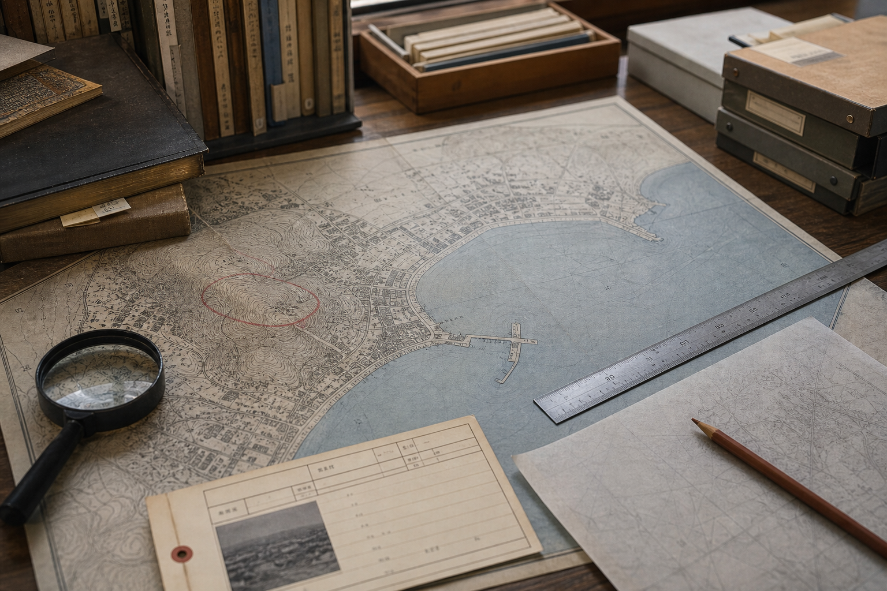

昭和34年観光案内図
古い案内図には、現在の港湾広場奥に「灯台予定地」と小さく記載されています。
同じ地点は資料館のM-071写真、学校の地域史研究部メモにも現れます。
観光協会の1998年版パンフレット以降、この予定地表記は削除されています。
Archive Pamphlet

古い案内図には、現在の港湾広場奥に「灯台予定地」と小さく記載されています。
同じ地点は資料館のM-071写真、学校の地域史研究部メモにも現れます。
観光協会の1998年版パンフレット以降、この予定地表記は削除されています。